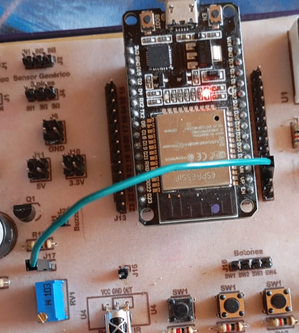

Objetivo. Aprender a utilizar un potenciómetro como entrada analógica en el ESP32. Comprender cómo varía la resistencia y el valor leído en función de la posición del eje del potenciómetro.
Procedimiento.
-
Conectar el potenciómetro al pin GPIO39 del ESP32, asegurando la alimentación en 3.3V y la
tierra en GND.

- Abrir Thonny y crear un nuevo archivo con extensión .py.
- Configurar el pin como entrada analógica usando la clase ADC.
- Ajustar la atenuación del ADC a 11dB para leer todo el rango de 0 a 4095.
-
Ejecutar el código y observar los valores en la consola.
from machine import ADC, Pin import time pot = ADC(Pin(39, Pin.IN)) # Crea un objeto ADC que actúa sobre el pin # Configura la atenuación ADC a 11dB para un rango completo pot.atten(pot.ATTN_11DB) while True: # Lee un valor análogo bruto entre 0-4095 valor = pot.read() print(f"valor: {valor}") # Espera 0.5 segundos antes de hacer la nueva lectura time.sleep(0.5)
Actividades sugeridas.
- Girar el potenciómetro y observar la variación de valores en consola.
- Modificar el código para mostrar los valores en una pantalla LCD1602.
- Cambiar el tiempo de muestreo para tener una lectura más rápida o más lenta.
Experimentos.
- Usar el valor del potenciómetro para controlar la intensidad de un LED con PWM.
- Guardar el programa en el microcontrolador y ejecutarlo sin conexión al PC.